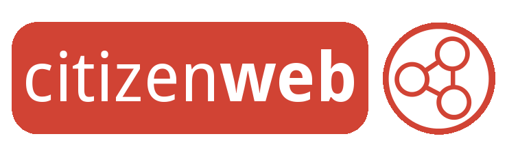

A comprehensive walkthrough of Linux, Personal Data Servers, Free Software and Digital Sovereignty for the security-minded techie and activist
Guide Version - v1.0 January 2013
for Ubuntu 12.04 and Arch Linux 2012.12.01
Table of Contents

The CitizenWeb Project by Jacob Cook are licensed under a Creative Commons Attribution-ShareAlike 3.0 Unported License.